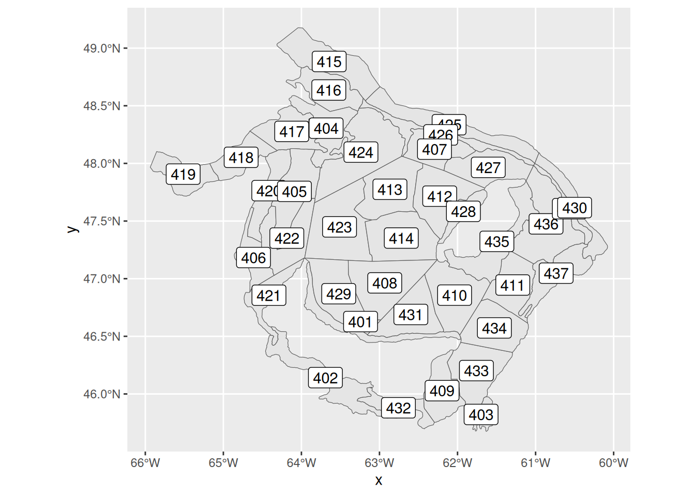

Analyse de la prédation au sein du golfe du Saint-Laurent
Author
Affiliation
Marie-Pierre Etienne
https://marieetienne.github.io/statspat
Published
December 11, 2025
Pêches et Océans Canada conduit chaque année des campagnes de suivi dans le Golf du Saint Laurent. Le plan de suivi est construit à partir d’une stratification du golfe (strates spatiales construites pour avoir des habitats relativement homogènes). Plusieurs mesures par strates sont faites et nous avons ici accès à la valeur vomyenne de ces mesures pour chaque strate.
Plus précisément, Les variables d’intérêt sont
dans le fichier StLaurent.csv
totconsum : indice de prédation total,
depth : profondeur,
temperature : température,
BH : présence de Bernards-l’hermite, (pas utilisée ici)
dans le répertoire strates_saint_laurent le fichier shapefile strates.shp contient les caractéristiques spatiales des strates administratives
Les packages utilisés seront
library(tidyverse)
── Attaching core tidyverse packages ──────────────────────── tidyverse 2.0.0 ──
✔ dplyr 1.1.4 ✔ readr 2.1.5
✔ forcats 1.0.0 ✔ stringr 1.5.1
✔ ggplot2 3.5.1 ✔ tibble 3.2.1
✔ lubridate 1.9.4 ✔ tidyr 1.3.1
✔ purrr 1.0.4
── Conflicts ────────────────────────────────────────── tidyverse_conflicts() ──
✖ dplyr::filter() masks stats::filter()
✖ dplyr::lag() masks stats::lag()
ℹ Use the conflicted package (<http://conflicted.r-lib.org/>) to force all conflicts to become errors
library(sf)
Linking to GEOS 3.12.1, GDAL 3.8.4, PROJ 9.4.0; sf_use_s2() is TRUE
library(spdep)
Loading required package: spData
To access larger datasets in this package, install the spDataLarge
package with: `install.packages('spDataLarge',
repos='https://nowosad.github.io/drat/', type='source')`
library(spatialreg)
Loading required package: Matrix
Attaching package: 'Matrix'
The following objects are masked from 'package:tidyr':
expand, pack, unpack
Attaching package: 'spatialreg'
The following objects are masked from 'package:spdep':
get.ClusterOption, get.coresOption, get.mcOption,
get.VerboseOption, get.ZeroPolicyOption, set.ClusterOption,
set.coresOption, set.mcOption, set.VerboseOption,
set.ZeroPolicyOption
# library(GGally) #eventuellement pour des stats desc library(purrr) # pour la validation croisée
Reading layer `strates' from data source
`/__w/statspat/statspat/strates_saint_laurent/strates.shp'
using driver `ESRI Shapefile'
Warning in CPL_read_ogr(dsn, layer, query, as.character(options), quiet, : GDAL
Message 1: /__w/statspat/statspat/strates_saint_laurent/strates.shp contains
polygon(s) with rings with invalid winding order. Autocorrecting them, but that
shapefile should be corrected using ogr2ogr for example.
Simple feature collection with 38 features and 1 field
Geometry type: MULTIPOLYGON
Dimension: XY
Bounding box: xmin: -65.9368 ymin: 45.6756 xmax: -60.0779 ymax: 49.17685
Geodetic CRS: WGS 84
strates_sf |>ggplot() +geom_sf()
nrow(strates_sf)
[1] 38
Décrire les variables du tableau dta. Les classer par type (quantitatives, qualitatives, spatiales). Faire une analyse descriptive rapide des données.
Mettre à jour la table strates_sf pour qu’elle contienne toutes les données et proposer une visualisation spatiale des données de température.
Joining with `by = join_by(strate)`
Warning in st_point_on_surface.sfc(sf::st_zm(x)): st_point_on_surface may not
give correct results for longitude/latitude data

2. Systèmes de voisinage
Nous construisons plusieurs définitions de voisinage spatial.
centroids <-st_centroid(strates_sf)
Warning: st_centroid assumes attributes are constant over geometries
Pourquoi le choix du voisinage influence-t-il les conclusions statistiques ?
Les fonctions pour construire les graphes de voisinage proviennent du package spdep et ne sont pas directement au format sf la fonction ci-dessous va nous permettre de représenter en format sf le graphe de voisinage associé à un système de voisinage.
nb_to_sflines <-function(nb, coords, crs =NA) {# nb : object of class "nb"# coords: matrix n x 2 (usually st_coordinates of centroids) nbs <-map2(rep(seq_along(nb), lengths(nb)),unlist(nb), \(i, j) st_linestring(rbind(coords[i, ], coords[j, ])) ) res <-st_sf(from =rep(seq_along(nb), lengths(nb)),to =unlist(nb),geometry =st_sfc(nbs, crs = crs) )return(res)}
Voici un exemple d’utilisation pour visualier le voisinage voisin_poly. comparer les différentes structures de voisinage et discuter.
Moran I test under randomisation
data: dta$totconsum
weights: poids.vois
Moran I statistic standard deviate = 2.0122, p-value = 0.0221
alternative hypothesis: greater
sample estimates:
Moran I statistic Expectation Variance
0.19119001 -0.02702703 0.01176042
geary.test(dta$totconsum, poids.vois)
Geary C test under randomisation
data: dta$totconsum
weights: poids.vois
Geary C statistic standard deviate = 2.5943, p-value = 0.004739
alternative hypothesis: Expectation greater than statistic
sample estimates:
Geary C statistic Expectation Variance
0.68582957 1.00000000 0.01466532
Qu’est-ce que l’autocorrélation spatiale ?
Interpréter le signe et la valeur du test de Moran.
Quelle différence conceptuelle entre Moran et Geary ?
4. Modèle linéaire classique
Ajuster un modèle linéaire classique pour expliquer l’indice de prédation en fonction de la température, de la profondeur et de la présence de Bernard l’hermite. Quelles variables vous semblent pertinentes ?
Call:
lm(formula = totconsum ~ temperature, data = dta)
Residuals:
Min 1Q Median 3Q Max
-0.27395 -0.06573 -0.01683 0.06186 0.31137
Coefficients:
Estimate Std. Error t value Pr(>|t|)
(Intercept) 0.126135 0.028351 4.449 7.98e-05 ***
temperature 0.025363 0.005035 5.037 1.34e-05 ***
---
Signif. codes: 0 '***' 0.001 '**' 0.01 '*' 0.05 '.' 0.1 ' ' 1
Residual standard error: 0.1255 on 36 degrees of freedom
Multiple R-squared: 0.4135, Adjusted R-squared: 0.3972
F-statistic: 25.38 on 1 and 36 DF, p-value: 1.34e-05
Moran I test under randomisation
data: residuals(mod_lm)
weights: poids.vois
Moran I statistic standard deviate = 1.8772, p-value = 0.03024
alternative hypothesis: greater
sample estimates:
Moran I statistic Expectation Variance
0.18097471 -0.02702703 0.01227743
Questions
Que mesure le coefficient associé à temperature ?
Représenter sptialement les résdus. Qu’en pensez vous ?
Pourquoi tester l’autocorrélation spatiale des résidus ? Que vaut le test de Moran sur ces résidus ?
Que conclure si les résidus présentent une structure spatiale ?
Warning in spautolm(totconsum ~ temperature, data = dta, listw = poids.vois, :
Non-symmetric spatial weights in CAR model
Écrire les équations des modèles :
SAR erreur,
SAR retard,
modèle mixte (Spatial Durbin),
modèle CAR.
Interpréter la présence du terme lag.temperature dans le modèle mixte.
En observant les résidus des modèles, lequel rend les résidus les moins autocorrélés ?
Comparer les modèles via LR.sarlm() et AIC. Lequel recommanderiez-vous ?
Etes vous vraiment satisfait ?
6. Validation croisée
Un bon modèle spatial n’est pas seulement explicatif : il doit prédire correctement hors échantillon.
Le code suivant propose une implementation possible de validation croisée sur les strates.
loo_lm <-map_dbl(1:nrow(strates_sf), \(i) { mod <-lm(totconsum ~ temperature, data=strates_sf[-i, ])predict(mod, newdata=dta[i, ])})RMSE_lm <-sqrt(mean((dta$totconsum - loo_lm)^2))voisin_poly <-poly2nb(strates_sf)poids.vois <-nb2listw(voisin_poly,style="W")row.names(strates_sf) <-attr(poids.vois, "region.id")loo_sar <-map_dbl(seq_len(nrow(strates_sf)), \(i) { n <-nrow(strates_sf) train_idx <-setdiff(seq_len(n), i) test_idx <- itryCatch({# données d'apprentissage strates_train <- strates_sf[train_idx, ]# voisinage restreint au train pour l'estimation id_train <- ((1:n) %in% train_idx) voisin_train <-subset(voisin_poly, subset = id_train) poids_train <-nb2listw(voisin_train, style ="W", zero.policy =TRUE)# modèle SAR sur l'échantillon train mod <-lagsarlm( totconsum ~ temperature,data = strates_train,listw = poids_train,zero.policy =TRUE )# prédiction sur l'observation i# on fournit les poids COMPLETS pour que la structure spatiale apprise# puisse utiliser aussi les voisins dans le train pred_i <-predict( mod,newdata = strates_sf,listw = poids.vois, # structure spatiale complètezero.policy =TRUE,type ="response" )as.numeric(pred_i)[i] }, error =function(e) {message(" -> erreur à i = ", i, " : ", conditionMessage(e))NA_real_# on retourne NA pour cette strate })})
Warning in predict.Sarlm(mod, newdata = strates_sf, listw = poids.vois, : some
region.id are both in data and newdata
Warning in predict.Sarlm(mod, newdata = strates_sf, listw = poids.vois, : some
region.id are both in data and newdata
Warning in predict.Sarlm(mod, newdata = strates_sf, listw = poids.vois, : some
region.id are both in data and newdata
Warning in predict.Sarlm(mod, newdata = strates_sf, listw = poids.vois, : some
region.id are both in data and newdata
Warning in predict.Sarlm(mod, newdata = strates_sf, listw = poids.vois, : some
region.id are both in data and newdata
Warning in predict.Sarlm(mod, newdata = strates_sf, listw = poids.vois, : some
region.id are both in data and newdata
Warning in predict.Sarlm(mod, newdata = strates_sf, listw = poids.vois, : some
region.id are both in data and newdata
Warning in subset.nb(voisin_poly, subset = id_train): subsetting caused
increase in subgraph count
Warning in predict.Sarlm(mod, newdata = strates_sf, listw = poids.vois, : some
region.id are both in data and newdata
Warning in predict.Sarlm(mod, newdata = strates_sf, listw = poids.vois, : some
region.id are both in data and newdata
Warning in predict.Sarlm(mod, newdata = strates_sf, listw = poids.vois, : some
region.id are both in data and newdata
Warning in predict.Sarlm(mod, newdata = strates_sf, listw = poids.vois, : some
region.id are both in data and newdata
Warning in predict.Sarlm(mod, newdata = strates_sf, listw = poids.vois, : some
region.id are both in data and newdata
Warning in predict.Sarlm(mod, newdata = strates_sf, listw = poids.vois, : some
region.id are both in data and newdata
Warning in predict.Sarlm(mod, newdata = strates_sf, listw = poids.vois, : some
region.id are both in data and newdata
Warning in predict.Sarlm(mod, newdata = strates_sf, listw = poids.vois, : some
region.id are both in data and newdata
Warning in predict.Sarlm(mod, newdata = strates_sf, listw = poids.vois, : some
region.id are both in data and newdata
Warning in predict.Sarlm(mod, newdata = strates_sf, listw = poids.vois, : some
region.id are both in data and newdata
Warning in predict.Sarlm(mod, newdata = strates_sf, listw = poids.vois, : some
region.id are both in data and newdata
Warning in predict.Sarlm(mod, newdata = strates_sf, listw = poids.vois, : some
region.id are both in data and newdata
Warning in predict.Sarlm(mod, newdata = strates_sf, listw = poids.vois, : some
region.id are both in data and newdata
Warning in predict.Sarlm(mod, newdata = strates_sf, listw = poids.vois, : some
region.id are both in data and newdata
Warning in predict.Sarlm(mod, newdata = strates_sf, listw = poids.vois, : some
region.id are both in data and newdata
Warning in predict.Sarlm(mod, newdata = strates_sf, listw = poids.vois, : some
region.id are both in data and newdata
Warning in predict.Sarlm(mod, newdata = strates_sf, listw = poids.vois, : some
region.id are both in data and newdata
Warning in predict.Sarlm(mod, newdata = strates_sf, listw = poids.vois, : some
region.id are both in data and newdata
Warning in predict.Sarlm(mod, newdata = strates_sf, listw = poids.vois, : some
region.id are both in data and newdata
Warning in predict.Sarlm(mod, newdata = strates_sf, listw = poids.vois, : some
region.id are both in data and newdata
Warning in predict.Sarlm(mod, newdata = strates_sf, listw = poids.vois, : some
region.id are both in data and newdata
Warning in predict.Sarlm(mod, newdata = strates_sf, listw = poids.vois, : some
region.id are both in data and newdata
Warning in subset.nb(voisin_poly, subset = id_train): subsetting caused
increase in subgraph count
Warning in predict.Sarlm(mod, newdata = strates_sf, listw = poids.vois, : some
region.id are both in data and newdata
Warning in predict.Sarlm(mod, newdata = strates_sf, listw = poids.vois, : some
region.id are both in data and newdata
Warning in predict.Sarlm(mod, newdata = strates_sf, listw = poids.vois, : some
region.id are both in data and newdata
Warning in predict.Sarlm(mod, newdata = strates_sf, listw = poids.vois, : some
region.id are both in data and newdata
Warning in predict.Sarlm(mod, newdata = strates_sf, listw = poids.vois, : some
region.id are both in data and newdata
Warning in predict.Sarlm(mod, newdata = strates_sf, listw = poids.vois, : some
region.id are both in data and newdata
Warning in predict.Sarlm(mod, newdata = strates_sf, listw = poids.vois, : some
region.id are both in data and newdata
Warning in predict.Sarlm(mod, newdata = strates_sf, listw = poids.vois, : some
region.id are both in data and newdata
Warning in predict.Sarlm(mod, newdata = strates_sf, listw = poids.vois, : some
region.id are both in data and newdata